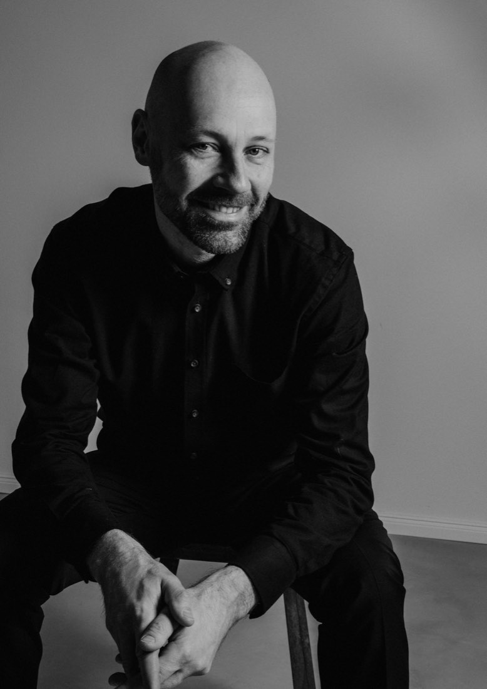

Harald
Oeler

Bereits als Jugendlicher ausgebildet in Komposition, Orgel- und Klavierspiel, erhielt Harald Oeler seine entscheidenden musikalischen Impulse von Hans Bogner an der Musikschule Gaggenau. Erste Preise bei nationalen Wettbewerben und die Vorbereitung auf das bevorstehende Musikstudium, waren der Nährboden einer äußerst wertvollen Unterrichtszeit bei Hans Bogner.
Nach dem Abitur folgte ein Musikstudium im Hauptfach Akkordeon, zunächst bei Prof Hugo Noth, später bei Prof. Stefan Hussong an der Hochschule für Musik in Würzburg. Die eindrucksvollen Studienjahre formten einen Musiker, welcher heute in einem breitgefächerten musikalisch-künstlerischen Aufgabenfeld von Jazz, Transkriptionsmusik und zeitgenössischer Musik aktiv ist.
Zahlreiche nationale und internationale Wettbewerbserfolge festigten, auf dem Weg zum Meisterklassendiplom, 2008, die Bühnenreife und künstlerische Individualität Harald Oelers. Ein 3. Preis beim 3rd Internationale Accordion Competition JAA Tokio/Japan 2002, ein 2. Preis beim bedeutendsten internationalen Akkordeonwettbewerb in Arrasate 2007 und ein 1. Preis beim 45. Internationalen Akkordeonwettbewerb Klingenthal mit dem Akkordeonduo Animé 2008, belegen dies eindrucksvoll.
Gefördert wurde Harald Oeler während seines Studiums als Stipendiat der Studienstiftung des deutschen Volkes und der Yehudi Menuhin Stiftung „Live Music Now“. Konzerte bei renomierten Klassik- und Jazzfestivals wie dem Heidelberger Frühling, dem Literaturfest Niedersachsen, den Sommerlichen Musiktagen Hitzacker und dem 41. Frankfurter Jazzfestival folgten.
Neben zahlreichen Rundfunkaufnahmen ist sein weitgefächertes künstlerisches Schaffen auf CDs von Genuin, Thorofon, OehmsClassics und Dewey Records dokumentiert.
Im Sommer 2012 lehrte Harald Oeler als Gastdozent an der „Normal Shenzhen University“ in China. Als Lehrbeauftragter für Akkordeon arbeitete Harald Oeler von 2007 bis 2019 an der Ludwig-Maximilians-Universität München. Weiterhin ist er hauptamtlicher Akkordeondozent und Leiter der Theorie- und Förderklasse an der Musikschule der „Hofer Symphoniker“. Zu Beginn des Schuljahres 2026 etablierte Harald Oeler das Fach Akkordeon an der Städtischen Musikschule Bayreuth. Ab dem Wintersemester 2026/2027 ist er zudem Lehrbeauftragter für Fachdidaktik/Lehrpraxis und Methodik im Fach Akkordeon an der Hochschule für Musik Nürnberg.
Unter seinen Schülern befinden sich zahlreiche Preisträger verschiedener Wettbewerbe, darunter vierzehn 1. Bundespreisträger bei Jugend musiziert, 1. Preisträger des Deutschen Akkordeon Musikpreis und Preisträger des Internationalen Akkordeonfestivals in Innsbruck.